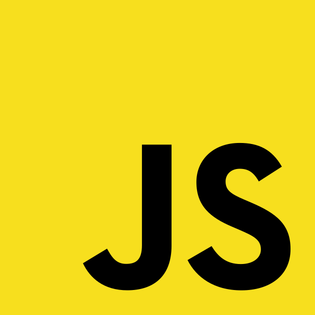
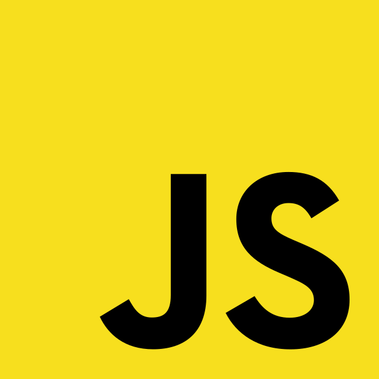

Ricardo Alves Paula
.NET Developer
Professional with experience in Software Development, who knows how to use technologies,
programming languages, and frameworks such as C# (.NET) and Node.js in the back-end, Angular in the front-end,
Git and SVN for systems versioning, GitHub and Bitbucket. Always striving for high code quality, writing unit
and integration tests, applying standards such as SOLID, Design Patterns, Clean Code, and Clean Architecture,
from planning to development and deployment of new applications through CI/CD pipelines, in addition to
maintenance and support for existing applications.
He also has experience in migrating legacy systems to current technologies. Finally, a
professional with ease of communication and who knows how to work in groups (squads),
using agile methodologies such as SAFe and Scrum.

 
